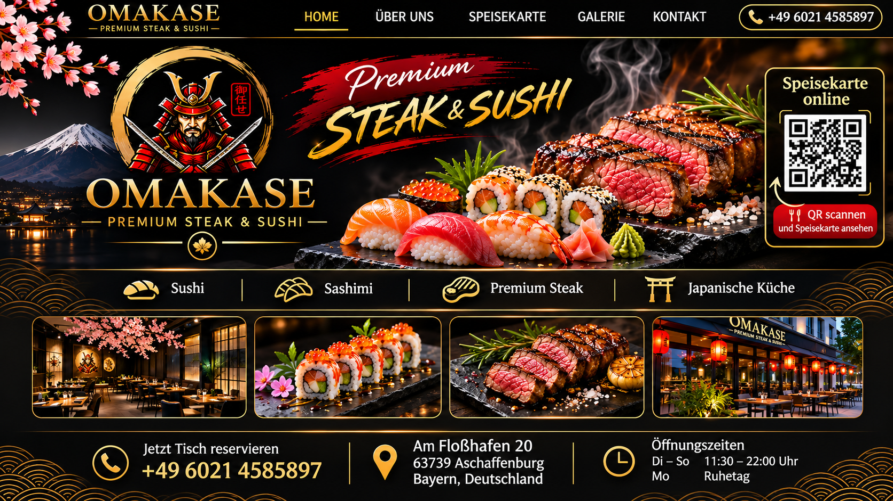

Fein zubereitete Sushi-Kreationen.
Über uns
Willkommen bei OMAKASE – Premium Steak & Sushi. Bei uns erwartet Sie eine besondere Verbindung aus japanischer Esskultur, frischem Sushi und hochwertigen Steak-Spezialitäten. Wir möchten Ihnen ein außergewöhnliches Genusserlebnis in stilvoller Atmosphäre bieten.
Frisches Sushi & feines Sashimi
Entdecken Sie unsere vielfältigen Sushi-Kreationen und feines Sashimi. Frische Zutaten, sorgfältige Zubereitung und Liebe zum Detail stehen bei uns im Mittelpunkt.
Premium Steak – direkt auf heißem Stein serviert
Ein besonderes Highlight sind unsere ausgewählten Steak-Spezialitäten. Ihr Steak wird auf heißem Stein zubereitet und direkt auf dem heißen Stein an Ihren Tisch gebracht. So können Sie es nach Ihrem persönlichen Geschmack genießen.
Genuss mit besonderem Ambiente
Ob mit der Familie, mit Freunden, bei einem romantischen Dinner oder zu einem besonderen Anlass – wir möchten jeden Besuch zu einem schönen Erlebnis machen. Qualität, Frische, Geschmack und Gastfreundschaft stehen für uns im Mittelpunkt.
Wir freuen uns darauf, Sie bei OMAKASE in Aschaffenburg begrüßen zu dürfen!
Bei OMAKASE verbinden wir die Vielfalt der japanischen Küche mit ausgewählten Steak-Spezialitäten. Unser Ziel ist es, Ihnen ein besonderes Geschmackserlebnis in stilvoller Atmosphäre zu bieten.
Entdecken Sie frisch zubereitetes Sushi, feines Sashimi und herzhafte Steak-Spezialitäten vom Grill. Qualität, Geschmack und Liebe zum Detail stehen bei uns im Mittelpunkt.
Wir freuen uns darauf, Sie bei OMAKASE in Aschaffenburg begrüßen zu dürfen!
Puristischer Genuss mit frischen Zutaten.
Herzhafte Steak-Spezialitäten vom Grill.
Speisekarte
Unsere aktuelle Speisekarte steht als PDF zum Öffnen bereit.
Galerie
Ein kleiner Eindruck unserer Genusswelt.

Kontakt & Reservierung
Wir freuen uns auf Ihre Anfrage und Ihren Besuch.
Telefon
Öffnungszeiten
Montag–Sonntag: 11:30–22:00 Uhr
Dienstag: Ruhetag